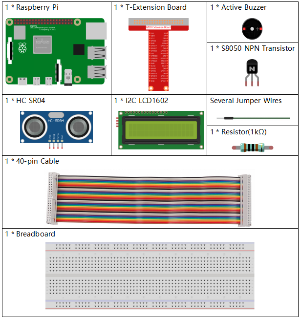

Bemerkung
Hallo und willkommen in der SunFounder Raspberry Pi & Arduino & ESP32 Enthusiasten-Gemeinschaft auf Facebook! Tauchen Sie tiefer ein in die Welt von Raspberry Pi, Arduino und ESP32 mit anderen Enthusiasten.
Warum beitreten?
Expertenunterstützung: Lösen Sie Nachverkaufsprobleme und technische Herausforderungen mit Hilfe unserer Gemeinschaft und unseres Teams.
Lernen & Teilen: Tauschen Sie Tipps und Anleitungen aus, um Ihre Fähigkeiten zu verbessern.
Exklusive Vorschauen: Erhalten Sie frühzeitigen Zugang zu neuen Produktankündigungen und exklusiven Einblicken.
Spezialrabatte: Genießen Sie exklusive Rabatte auf unsere neuesten Produkte.
Festliche Aktionen und Gewinnspiele: Nehmen Sie an Gewinnspielen und Feiertagsaktionen teil.
üëâ Sind Sie bereit, mit uns zu erkunden und zu erschaffen? Klicken Sie auf [hier] und treten Sie heute bei!
3.1.3 Rückfahrwarnung
Einführung
In diesem Projekt werden wir ein LCD, einen Summer und Ultraschallsensoren verwenden, um ein Rückfahrassistenzsystem zu erstellen. Wir können es auf ein ferngesteuertes Fahrzeug setzen, um den tatsächlichen Prozess des Rückwärtsfahrens in eine Garage zu simulieren.
Benötigte Komponenten
Für dieses Projekt benötigen wir folgende Komponenten.
{kind=link}
Schaltplan
Der Ultraschallsensor erfasst die Entfernung zwischen sich und dem Hindernis, die auf dem LCD in Form von Code angezeigt wird. Gleichzeitig lässt der Ultraschallsensor den Summer Tonsignale unterschiedlicher Frequenz ausgeben, je nach Entfernungswert.
T-Board Name |
physisch |
wiringPi |
BCM |
GPIO23 |
Pin 16 |
4 |
23 |
GPIO24 |
Pin 18 |
5 |
24 |
GPIO17 |
Pin 11 |
0 |
17 |
SDA1 |
Pin 3 |
||
SCL1 |
Pin 5 |
Experimentelle Verfahren
Schritt 1: Bauen Sie den Schaltkreis.

Schritt 2: Wechseln Sie das Verzeichnis.
cd ~/davinci-kit-for-raspberry-pi/python-pi5
Schritt 3: Ausführen.
sudo python3 3.1.3_ReversingAlarm_zero.py
Während der Code ausgeführt wird, erkennt der Ultraschallsensormodul die Entfernung zum Hindernis und zeigt die Informationen über die Entfernung auf dem LCD1602 an; außerdem gibt der Summer ein Warnsignal aus, dessen Frequenz sich mit der Entfernung ändert.
Bemerkung
Wenn Sie den Fehler
FileNotFoundError: [Errno 2] No such file or directory: '/dev/i2c-1'erhalten, beziehen Sie sich bitte auf I2C configuration, um den I2C zu aktivieren.Bei der Fehlermeldung
ModuleNotFoundError: No module named 'smbus2'führen Sie bittesudo pip3 install smbus2aus.Wenn der Fehler
OSError: [Errno 121] Remote I/O errorauftritt, bedeutet dies, dass das Modul falsch verkabelt ist oder defekt ist.Wenn der Code und die Verkabelung in Ordnung sind, das LCD jedoch keinen Inhalt anzeigt, können Sie das Potentiometer auf der Rückseite drehen, um den Kontrast zu erhöhen.
Warnung
Wenn die Fehlermeldung RuntimeError: Cannot determine SOC peripheral base address angezeigt wird, lesen Sie bitte Wenn gpiozero nicht funktioniert.
Code
Bemerkung
Sie können den untenstehenden Code modifizieren/zurücksetzen/kopieren/ausführen/stoppen. Bevor Sie dies tun, sollten Sie jedoch zum Quellcodepfad wie raphael-kit/python-pi5 wechseln. Nachdem Sie den Code geändert haben, können Sie ihn direkt ausführen, um das Ergebnis zu sehen.
#!/usr/bin/env python3
import LCD1602
import time
from gpiozero import DistanceSensor, Buzzer
# Initialisierung des Ultraschallsensors mit GPIO-Pins
sensor = DistanceSensor(echo=24, trigger=23) # Echo-Pin ist GPIO 24, Trigger-Pin ist GPIO 23
# Initialisierung des Buzzers an GPIO-Pin 17
buzzer = Buzzer(17)
def lcdsetup():
# Initialisierung des LCD mit I2C-Adresse und Aktivierung der Hintergrundbeleuchtung
LCD1602.init(0x27, 1) # 0x27 ist die I2C-Adresse des LCD
LCD1602.clear() # LCD-Display löschen
# Startnachrichten auf dem LCD anzeigen
LCD1602.write(0, 0, 'Ultraschall Start')
LCD1602.write(1, 1, 'Von SunFounder')
time.sleep(2) # 2 Sekunden warten
def distance():
# Berechnet und gibt die gemessene Entfernung des Sensors zurück
dis = sensor.distance * 100 # Entfernung in Zentimeter umrechnen
print('Entfernung: {:.2f} cm'.format(dis)) # Entfernung mit zwei Dezimalstellen anzeigen
time.sleep(0.3) # 0.3 Sekunden warten, bevor die nächste Messung erfolgt
return dis
def loop():
# Kontinuierliche Entfernungsmessung und Aktualisierung von LCD und Summer
while True:
dis = distance() # Aktuelle Entfernung ermitteln
# Entfernung anzeigen und Alarme basierend auf der Entfernung handhaben
if dis > 400: # Prüfen, ob die Entfernung außerhalb des Bereichs liegt
LCD1602.clear()
LCD1602.write(0, 0, 'Fehler')
LCD1602.write(3, 1, 'Außer Reichweite')
time.sleep(0.5)
else:
# Aktuelle Entfernung auf dem LCD anzeigen
LCD1602.clear()
LCD1602.write(0, 0, 'Entfernung ist')
LCD1602.write(5, 1, str(round(dis, 2)) + ' cm')
# Summerfrequenz basierend auf der Entfernung anpassen
if dis >= 50:
time.sleep(0.5)
elif 20 < dis < 50:
# Mittlere Entfernung: mittlere Summerfrequenz
for _ in range(2):
buzzer.on()
time.sleep(0.05)
buzzer.off()
time.sleep(0.2)
elif dis <= 20:
# Nahe Entfernung: hohe Summerfrequenz
for _ in range(5):
buzzer.on()
time.sleep(0.05)
buzzer.off()
time.sleep(0.05)
try:
lcdsetup() # LCD-Display einrichten
loop() # Messschleife starten
except KeyboardInterrupt:
# Summer ausschalten und LCD löschen bei Benutzerunterbrechung (z. B. Strg+C)
buzzer.off()
LCD1602.clear()
Code-Erklärung
Dieses Skript nutzt verschiedene Bibliotheken für seine Funktionalität. Die Bibliothek
LCD1602verwaltet das LCD-Display, währendtimezeitbezogene Funktionen bereitstellt. Die Bibliothekgpiozeroist essentiell für die Interaktion mit den GPIO-Pins des Raspberry Pi, insbesondere für den Betrieb des DistanceSensor und des Buzzers.#!/usr/bin/env python3 import LCD1602 import time from gpiozero import DistanceSensor, Buzzer
Der Ultraschallsensor wird mit seinen Echo- und Trigger-Pins an die GPIO-Pins 24 und 23 angeschlossen. Zusätzlich ist ein Summer an GPIO-Pin 17 angeschlossen.
# Initialisierung des Ultraschallsensors mit GPIO-Pins sensor = DistanceSensor(echo=24, trigger=23) # Echo-Pin ist GPIO 24, Trigger-Pin ist GPIO 23 # Initialisierung des Buzzers an GPIO-Pin 17 buzzer = Buzzer(17)
Die Initialisierung des LCD-Displays umfasst das Löschen und Anzeigen einer Startnachricht.
def lcdsetup(): # Initialisierung des LCD mit I2C-Adresse und Aktivierung der Hintergrundbeleuchtung LCD1602.init(0x27, 1) # 0x27 ist die I2C-Adresse des LCD LCD1602.clear() # LCD-Display löschen # Startnachrichten auf dem LCD anzeigen LCD1602.write(0, 0, 'Ultraschall Start') LCD1602.write(1, 1, 'Von SunFounder') time.sleep(2) # 2 Sekunden warten
Die Funktion
distanceberechnet die vom Ultraschallsensor gemessene Entfernung und gibt sie aus, wobei der Wert in Zentimeter zurückgegeben wird.def distance(): # Berechnet und gibt die gemessene Entfernung des Sensors zurück dis = sensor.distance * 100 # Entfernung in Zentimeter umrechnen print('Entfernung: {:.2f} cm'.format(dis)) # Entfernung mit zwei Dezimalstellen anzeigen time.sleep(0.3) # 0.3 Sekunden warten, bevor die nächste Messung erfolgt return dis
Die Hauptschleife misst kontinuierlich die Entfernung und aktualisiert sowohl das LCD als auch den Summer. Sie behandelt unterschiedliche Entfernungsbereiche mit spezifischen Aktionen, wie das Anzeigen von Fehlermeldungen oder das Variieren der Summerfrequenz basierend auf der gemessenen Entfernung.
def loop(): # Kontinuierliche Entfernungsmessung und Aktualisierung von LCD und Summer while True: dis = distance() # Aktuelle Entfernung ermitteln # Entfernung anzeigen und Alarme basierend auf der Entfernung handhaben if dis > 400: # Prüfen, ob die Entfernung außerhalb des Bereichs liegt LCD1602.clear() LCD1602.write(0, 0, 'Fehler') LCD1602.write(3, 1, 'Außer Reichweite') time.sleep(0.5) else: # Aktuelle Entfernung auf dem LCD anzeigen LCD1602.clear() LCD1602.write(0, 0, 'Entfernung ist') LCD1602.write(5, 1, str(round(dis, 2)) + ' cm') # Summerfrequenz basierend auf der Entfernung anpassen if dis >= 50: time.sleep(0.5) elif 20 < dis < 50: # Mittlere Entfernung: mittlere Summerfrequenz for _ in range(2): buzzer.on() time.sleep(0.05) buzzer.off() time.sleep(0.2) elif dis <= 20: # Nahe Entfernung: hohe Summerfrequenz for _ in range(5): buzzer.on() time.sleep(0.05) buzzer.off() time.sleep(0.05)
Bei der Ausführung richtet das Skript das LCD ein und tritt in die Hauptschleife ein. Es kann mit einem Tastaturbefehl (Strg+C) unterbrochen werden, wodurch der Summer ausgeschaltet und das LCD gelöscht wird.
try: lcdsetup() # LCD-Display einrichten loop() # Messschleife starten except KeyboardInterrupt: # Summer ausschalten und LCD löschen bei Benutzerunterbrechung (z. B. Strg+C) buzzer.off() LCD1602.clear()